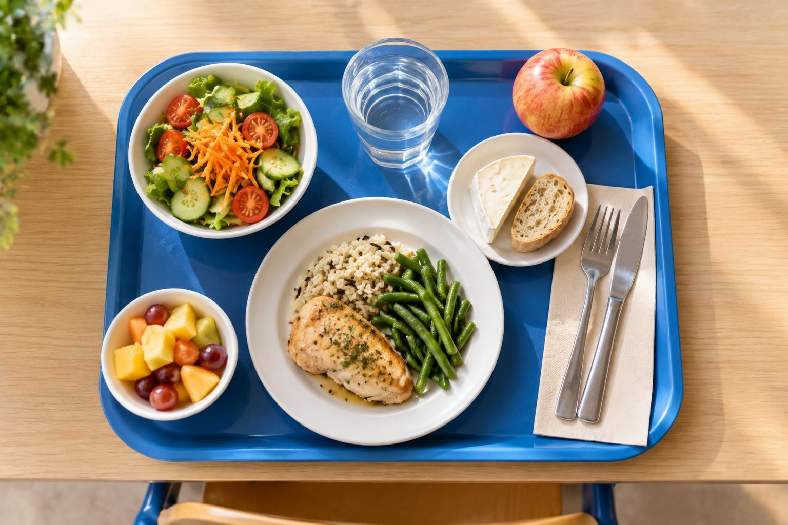

Le programme
Vivre mieux à Vallenoire, sans dépenser plus.
Des factures allégées, une ville plus apaisée, des trajets plus simples. Chaque mesure dit pour qui, avec quel levier de la mairie et pour quand : vous pourrez tout vérifier.
- 24mesures concrètes et datées
- 6quartiers, une permanence par mois dans chacun
- 0 %de hausse du taux communal de taxe foncière
Les 24 mesures
Trouvez ce qui change pour vous
Choisissez un thème ou votre situation : les mesures qui vous concernent sont mises en avant. Ouvrez une mesure pour voir le détail.
Les 24 mesures sont affichées.
Pouvoir d’achat
Priorité 1 · 8 mesures

Mesure 1 : Taxe foncière : taux communal geléAucune hausse du taux communal pendant tout le mandat.
- Pour qui
- Propriétaires
- Levier de la mairie
- Vote annuel des taux
- Quand
- Dès le premier budget
Mesure 2 : Cantine et périscolaire au quotient familialChaque famille paie selon ses revenus, avec un tarif plancher pour les plus petits budgets.
- Pour qui
- Familles
- Levier de la mairie
- Tarifs communaux
- Quand
- Rentrée suivant l’élection
Mesure 3 : Une mutuelle communale négociéeUne complémentaire santé moins chère, négociée pour tous les habitants qui le souhaitent.
- Pour qui
- Seniors, petits revenus
- Levier de la mairie
- Convention avec le CCAS
- Quand
- Première année
Mesure 4 : Achat groupé d’électricité et de gazTous les foyers peuvent payer leur énergie moins cher, sans engagement.
- Pour qui
- Tous les habitants
- Levier de la mairie
- Organisation communale
- Quand
- Première année
Mesure 5 : Guichet « Toutes vos aides »Un seul endroit, en mairie et en permanence de quartier, pour connaître et obtenir les aides auxquelles vous avez droit.
- Pour qui
- Seniors, familles
- Levier de la mairie
- CCAS
- Quand
- Six premiers mois
Mesure 6 : Pass jeunes sport et cultureUn coup de pouce pour les 16 à 25 ans : club, cinéma, conservatoire, médiathèque.
- Pour qui
- Jeunes de 16 à 25 ans
- Levier de la mairie
- Budget communal
- Quand
- Première année
Mesure 7 : Stationnement gratuit 1 heure en centre-villeFaire ses courses sous les arcades sans payer la première heure.
- Pour qui
- Commerçants, seniors
- Levier de la mairie
- Tarifs de stationnement
- Quand
- Dès le premier budget
Mesure 8 : Rénovation énergétique des bâtiments communauxLes économies d’énergie de la mairie financent les mesures de pouvoir d’achat.
- Pour qui
- Tous les habitants
- Levier de la mairie
- Investissement communal
- Quand
- Tout le mandat
Tranquillité
Priorité 2 · présence et prévention · 6 mesures
Mesure 9 : Police municipale de proximitéDes agents à pied, connus des habitants, le soir et le week-end.
- Pour qui
- Tous les habitants
- Levier de la mairie
- Effectifs et horaires
- Quand
- Première année
Mesure 10 : Médiateurs de rueDes médiateurs pour apaiser les conflits de voisinage et prévenir les incivilités.
- Pour qui
- Tous les habitants
- Levier de la mairie
- Recrutement ou partenariat associatif
- Quand
- Première année
Mesure 11 : Un référent tranquillité par quartierUn interlocuteur identifié et une réunion publique par trimestre dans chaque quartier.
- Pour qui
- Tous les habitants
- Levier de la mairie
- Organisation municipale
- Quand
- Six premiers mois
Mesure 12 : Un problème signalé, une réponse sous 7 joursUn problème dans votre rue ? Application, téléphone ou accueil : la mairie répond en 7 jours.
- Pour qui
- Tous les habitants
- Levier de la mairie
- Services municipaux
- Quand
- Six premiers mois
Mesure 13 : Éclairage LED des rues peu éclairéesRentrer à pied le soir plus sereinement, en consommant moins d’énergie.
- Pour qui
- Tous les habitants
- Levier de la mairie
- Éclairage public
- Quand
- Tout le mandat
Mesure 14 : Vidéoprotection, seulement là où les habitants la demandentUniquement aux points signalés par les habitants, avec une charte publique et une évaluation chaque année.
- Pour qui
- Commerçants, riverains
- Levier de la mairie
- Conseil municipal et préfecture
- Quand
- Selon diagnostic partagé
Mobilité du quotidien
Mieux se déplacer au quotidien · 7 mesures
Mesure 15 : Rues aux écolesLes rues devant les écoles fermées aux voitures à l’entrée et à la sortie des classes.
- Pour qui
- Familles
- Levier de la mairie
- Pouvoir de police de la circulation
- Quand
- Rentrée suivant l’élection
Mesure 16 : Un plan vélo continu et sécuriséDes pistes qui se suivent, d’un quartier à l’autre, sans rupture dangereuse.
- Pour qui
- 18 à 40 ans
- Levier de la mairie
- Voirie
- Quand
- Tout le mandat
Mesure 17 : Aide à l’achat d’un véloUne aide selon les revenus pour un vélo classique, électrique ou cargo.
- Pour qui
- 26 à 60 ans
- Levier de la mairie
- Budget communal
- Quand
- Première année
Mesure 18 : Trottoirs praticables et bancs réguliersMarcher avec une poussette ou une canne sans obstacle, et pouvoir s’asseoir en chemin.
- Pour qui
- Seniors, familles
- Levier de la mairie
- Voirie
- Quand
- Programme annuel
Mesure 19 : Transport à la demande pour les aînésUn service sur réservation pour les aînés et les personnes à mobilité réduite, hameaux compris.
- Pour qui
- Seniors
- Levier de la mairie
- CCAS ou agglomération
- Quand
- Première année
Mesure 20 : Des bus le soir et le week-endPlus de bus aux heures où l’on en a besoin, à tarif réduit pour les jeunes et les seniors.
- Pour qui
- Jeunes, seniors
- Levier de la mairie
- Compétence de l’agglomération, portée par la commune
- Quand
- À négocier avec l’agglomération
Mesure 21 : Parkings vélos sécurisés et aires de covoiturageLaisser son vélo en confiance à la gare et partager la route vers Bordeaux.
- Pour qui
- Actifs
- Levier de la mairie
- Foncier communal
- Quand
- Deux premières années
Environnement et méthode
Rendre des comptes · 3 mesures
Mesure 22 : Végétaliser les cours d’école et les rues les plus chaudesPlus d’ombre et de fraîcheur l’été, là où les enfants jouent et où l’on marche.
- Pour qui
- Familles
- Levier de la mairie
- Patrimoine communal
- Quand
- Tout le mandat
Mesure 23 : Le budget publié chaque année, en une pageLe coût de chaque engagement, lisible par tous, chaque année.
- Pour qui
- Tous les habitants
- Levier de la mairie
- Transparence
- Quand
- Chaque année
Mesure 24 : Un bilan public à mi-mandatEngagement par engagement : ce qui est fait, ce qui reste à faire, et pourquoi.
- Pour qui
- Tous les habitants
- Levier de la mairie
- Transparence
- Quand
- À mi-mandat
Simulateur
Ce que je gagne
4 informations suffisent pour estimer ce que 3 mesures peuvent faire économiser à votre foyer chaque année.
Jusqu’à
… €
par an pour votre foyer
- Cantine au quotient
- … €
- Taux communal gelé
- … €
- Achat groupé d’énergie
- … €
Estimation indicative, hypothèses de travail. Ce n’est pas une promesse de montant. Voir la méthode
Méthode et hypothèses de travail
- Cantine : 140 repas par enfant et par an, au prix actuel de 4,20 €. Tarifs proposés selon le quotient : 1,00 € · 2,50 € · 3,50 € · 4,20 €.
- Taxe foncière : hausse du taux communal évitée de 2 % par an, sur une part communale estimée à 50 % de votre avis. La revalorisation des bases, décidée chaque année par l’État, ne dépend pas de la commune et n’est pas comptée.
- Énergie : économie de 10 % sur la facture d’électricité grâce à l’achat groupé.
- Résultat arrondi à la dizaine d’euros. Ces hypothèses sont publiques et modifiables.
Quartier par quartier
Six quartiers, des priorités différentes
Choisissez un quartier sur le plan pour voir qui y vit, ce qui compte pour ses habitants et les mesures prioritaires. Le même contenu est dans le tableau en dessous.
Choisissez un quartier sur le plan, ou consultez le tableau.
| Quartier | Qui y vit | Ce qui compte ici | Mesures prioritaires |
|---|---|---|---|
| Hameaux viticoles | Agriculteurs, retraités isolés | L’isolement, le transport | 19, 3, 5 |
| Les Coteaux | Familles de 41 à 60 ans, maisons individuelles | La taxe foncière, la cantine, les trajets | 1, 2, 4, 16 |
| Le Pradet | Revenus modestes, familles, jeunes | Le pouvoir d’achat, des bus trop rares | 2, 5, 6, 20, 10 |
| Centre bastide | Surtout des 60 ans et plus, des commerçants | Des commerces vides, des trottoirs étroits, un centre calme le soir | 7, 9, 13, 18 |
| Gare Saint-Jean | Actifs de 26 à 40 ans | Une gare peu fréquentée le soir, des parkings à vélos | 9, 13, 21 |
| Les Quais | Retraités et jeunes couples | L’éclairage des berges, le stationnement | 13, 11, 21 |
Chiffres clés
Pourquoi le pouvoir d’achat d’abord
Des chiffres nationaux récents, avec leur source : chacun peut les vérifier.
- +2,4 %Prix à la consommation sur un an, en août 2026Source : Insee, Informations rapides n° 218 (nouvel onglet)
- +16,7 %Prix de l’énergie sur un an, en août 2026Source : Insee, Informations rapides n° 218 (nouvel onglet)
- 488 €Budget moyen de rentrée par foyer, soit 79 € de plus qu’en 2025Source : enquête Cofidis, rentrée 2026 (nouvel onglet)
- 46 %des parents disent avoir du mal à financer la rentréeSource : Empruntis, d’après l’enquête Cofidis (nouvel onglet)
- 56 %des parents craignent de manquer d’argentSource : Empruntis, d’après l’enquête Cofidis (nouvel onglet)
La méthode
Une mairie qui rend des comptes
Promettre ne suffit pas. Chaque année, vous pourrez vérifier où en est chaque engagement.
Le budget en une page
Publié chaque année : ce que coûte chaque engagement et comment il est financé.
Une permanence par mois
Dans chacun des 6 quartiers, pour écouter, répondre et corriger ce qui doit l’être.
Le bilan à mi-mandat
Mesure par mesure, en réunion publique : ce qui est fait et ce qui reste à faire.
Ce programme, on le porte ensemble.
2 heures par semaine suffisent pour faire la différence dans votre quartier.